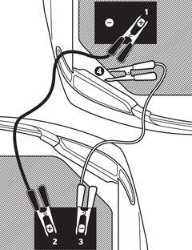

Lab 4 Pseudocoding and problem solving
Challenge
Get in the habit of thinking in terms of pseudocoding before jumping into coding.
Problems
We had some trouble thinking of how we wanted to organize the high-level tasks to our hang-man game. We also had some trouble figuring out how to place the precode.
Reflection
Over all this lab went really well, we were able to use our previous knowledge from other labs as a reference to any small questions we had. We were also able to get a majority of this lab done in our section!
Results
Jumpstarting a Car
- Gather materials
- Find a car with charged battery
- identify positive and negative terminals on both vehicles
- Connect jumper cables
- Start the working vehicle
- Attempt to start dead vehicle
- Remove jumper cables
- Let the dead vehicle run

//Hangman steps:
//Print board at the start of each turn
//Generate word before the user begins
//Accept user input
//Validate user move
//Invalidate user move
//Generate body part
//The player finishes the generated word
//Win
//Hangman is fully generated
//loss